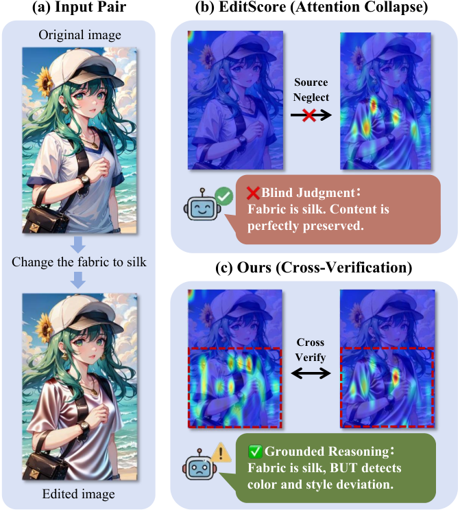

SpatialReward: Bridging the Perception Gap in Online RL for Image Editing via Explicit Spatial Reasoning SpatialReward：通过显式空间推理弥合图像编辑在线强化学习的感知鸿沟
Anchoring reward judgments to predicted pixel-level edit regions resolves Attention Collapse—boosting OmniGen2 by +0.90 on GEdit-Bench, doubling the gain of GPT-4.1.
通过将奖励判断显式锚定至预测编辑区域来破解跨图“注意力坍缩”难题，在线强化学习中将 OmniGen2 在 GEdit-Bench 上提升 +0.90，达到 GPT-4.1 增益的两倍。

Abstract摘要
Online Reinforcement Learning (RL) offers a promising avenue for complex image editing but is currently constrained by the scarcity of reliable, fine-grained reward signals. Existing evaluators suffer from a critical perception gap we term Attention Collapse, where models neglect cross-image comparisons and miss fine-grained details, resulting in miscalibrated scores.
We propose SpatialReward, a reward model that enforces precise verification via explicit spatial reasoning. By anchoring reasoning to predicted edit regions, SpatialReward grounds semantic judgments in pixel-level evidence. Trained on a curated 260k spatial-aware dataset, SpatialReward achieves state-of-the-art performance on MMRB2 and EditReward-Bench, outperforms proprietary evaluators on MultiEditReward-Bench, and boosts OmniGen2 by +0.90 on GEdit-Bench in online RL—surpassing the leading discriminative model and doubling the gain of GPT-4.1 (+0.45).
复杂图像编辑的在线强化学习长期受限于可靠细粒度奖励信号的匮乏，现有评测器普遍存在忽视跨图比对与细节失准的“注意力坍缩”现象。本文提出 SpatialReward，通过显式空间推理将语义评判锚定到预测的像素级编辑区域。基于 26 万条空间感知数据训练后，SpatialReward 在 MMRB2 与 EditReward-Bench 刷新 SOTA，并在 MultiEditReward-Bench 超越闭源评测器；作为在线 RL 奖励信号，可将 OmniGen2 在 GEdit-Bench 上提升 +0.90，达到 GPT-4.1（+0.45）增益的两倍。
Diagnosing Attention Collapse注意力坍缩诊断可视化

Citation引用格式
@article{keyevideo2026spatialreward,
title = {SpatialReward: Bridging the Perception Gap in Online RL for Image Editing via Explicit Spatial Reasoning},
author = {Keye Video Team},
journal = {arXiv preprint arXiv:2602.07458},
year = {2026},
url = {https://arxiv.org/abs/2602.07458}
}